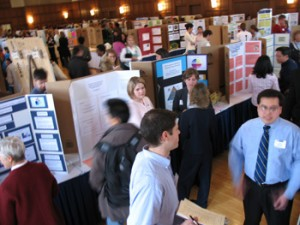

Akademik poster hazırlama - 2
Bu dönem lisans bitirme ödevi sunumları için bölümümüz yeni bir yöntem deniyor. Her projenin peş peşe anlatıldığı, 2-3 gün süren sunumlar yerine toplu bir poster oturumu gerçekleşecek. Bu yöntemin, yalnızca projenin danışman hocasının ve/veya araştırma görevlisinin katıldığı yeterince verimli olmayan sunumlardan daha iyi olacağı düşüncesindeyim. Poster hazırlama ve sunma ile ilgili bu hafta öğrencilere bildiklerimi/deneyimlediklerimi anlatacağım. Buraya da not düşeşim istedim. İllâ ki böyle yapılmalıdır iddiasında kesinlikle değilim, bunlar kişisel görüşlerimdir. Lütfen siz de fikirlerinizi yorum olarak girmekten çekinmeyin.
Yaklaşık bir yıl kadar önce SİU'da sunduğum poster hakkında bir yazı yazmıştım. Öncelikle onu okumanızı öneririm, çünkü bu yazı onun devamı/genişletilmesi biçiminde olacak.
Poster oturumu
Öncelikle poster oturumu ile kastedilen nedir, ona bakalım. Poster oturumu, aynı anda birçok (hatta onlarca) posterin koca bir salonda paralel bir biçimde sunulduğu oturumdur. Örneklerini alttaki resimlerde görebileceğiniz poster oturumunda, bilgisayarlı sunumda olduğu gibi sandalyelere oturmuş bir kitle sizi dinlemek için beklemez. Dinleyiciler ortalıkta dolanır, ilgisini çeken posterlere odaklanırlar. Yani bir çeşit fikir pazarıdır. Dolayısıyla posterinizin sunuş biçimi ilgi çekmeniz için önemlidir.

Posteri hazırlayalım
Bilgisayarda hazırlanan sunumdan (örneğin PPT veya LaTeX/PDF sunumu) farklı olarak tüm içerik posterdedir. Videolar, sağdan soldan uçuşan kutular, geçiş efektleri falan koyamazsınız. Tüm içeriği tek bir poster kağıdına sığdırmalısınız. Bunlar genellikle başlık, yazarlar, yazarların kurumları ile araştırmanın giriş/arkaplan, yöntemler, deneyler/sonuçlar ve vargılar bölümleridir.
Benim gördüklerim arasında gözüme hoş gelen iki kullanım biçimi var. Birincisi ilk yazıda bahsi geçen posterdeki kullanım. Postere kabaca bakarsanız soldan sağa doğru üç farklı yoldan ilerlediğini göreceksiniz. Poster az kutudan oluşan kocaman bir akış şeması biçiminde hazırlandı. Her adımın altında da ilgili ayrıntılar mevcut. Eğer süreç, bu biçimde bir akış şemasına indirgenebiliyorsa bence bu kullanım hem sunmak açısından hem de anlaşılması açısından iyi oluyor. Akış şemasının rengi biraz daha dikkat çekici olduğu için öne çıkıyor. Deneyler ve sonuçları en sağda aktarılıyor.
İkinci kullanım ise M. Gönen'in NIPS'09 posterine atfederek anlatacağım kullanım. Altta görüldüğü üzere, bu kullanımda içerik üç sütun halinde veriliyor. Sol üstte başlayan ve sütun sütun ilerleyen içeriği takip etmesi kolay, bakarken içinde kaybolunmuyor. İzleyenin dikkatini çekmesini istediği yerler daha belirgin kutularda. Resimler ve fontlar yeterince büyük ve anlaşılır.
Başka biçimlerde de posterler hazırlanabilir. Eğer yeteneğinize güveniyorsanız Bilim ve Teknik dergisinin verdiği poster ekleri gibi bir poster de hazırlayabilirsiniz. Fakat bunun için iyi bir sanatsal beceri ve daha çok emek gerekiyor. Eğer yaparsanız dikkat çekeceğinize ve olumlu geridönüşler alacağınıza hiç şüphe yok.
Posterin kompozisyonunun yanında bileşenlerin büyüklüğü de önemli. Posterin büyüklüğüne göre font seçimi yapılabilir. İzleyenlerin posterin 2-3 metre önünde duracağını düşünün ve buradan rahat görmelerini sağlamak için fontları büyük kullanmaya gayret gösterin. Paragraf halinde yazı yazmaktan, küçük ve karmaşık içerikten kaçının. Yerinde kullanılmış bir resmin bin kelimeye bedel olacağını unutmayın. Detaylı kısımları siz anlatacaksınız zaten, bu yüzden poster işin kabasını anlatsın.
Deneyler ve sonuçlara ait içeriğin anlaşılabilir olmasına dikkat edin. Figürlerdeki eksen adlarını, tabloların satır ve sütunlarının neye karşılık geldiğini, birimleri, vb. mutlaka yazın.
Kullandığınız ikonları/figürleri EPS/SVG formatlarında koyabilirseniz şahane olur. Böylelikle ekranda düzgün görünen figürler kocaman posterinizde de düzgün görünür, büyüyünce çözünürlük sorunu yaşamazlar. Eğer resim koyacaksanız büyük çözünürlüklü koymaya özen gösterin.
Poster dosyası hazır, peki nasıl çıktı alacağım?
RGB uzayı ekran için CMYK uzayı ise yazıcı için kullanılan renk uzayıdır. Poster dosyasını RGB değil, CMYK renklerinde kaydedin. Aksi halde matbaada "ama ben bu renkleri kullanmamıştım" şokunu yaşayabilirsiniz. Poster sunacağınız yere gitmek için uçağa binecekseniz ve çok eşya ile gidecekseniz posterinizi hafif bir kağıda bastırıp katlayarak, kırışmayacak biçimde bavulunuza koyabilirsiniz. Eğer ağırlık önemli değil, yeter ki poster şık gözüksün derseniz posterinizi kuşe kağıda bastırmak ve rulo yaparak çizimcilerin kullandığı kutuda taşımak daha iyi bir çözüm. İlk çözüm daha ucuz olabilir. Ayrıca beyaz arkaplan kullanırsanız iki durumda da posterinizi daha ucuza basarlar. Renkli arkaplan kullanırsanız ve CMYK formatında kaydetmezseniz çıkan sonuç hem cebinize hem de gözünüze ağır verebilir.
Çıktıyı birçok yerden yapabilirsiniz. Bizim okula (Boğaziçi) yakın olsun derseniz Durak'ta, biraz da hesaplı olsun derseniz Beşiktaş veya Taksim'deki ozalitçilerde çıktı alabilirsiniz. PDF dosyasından çıktı alabiliyorlar. Fakat PDF dokümanının sayfa boyutlarına dikkat edin. Katılacağınız konferansın istediği boyutlarda olsun. Eğer olmazsa çözüm olarak kolaya kaçıp PDF'yi Photoshop ile açıyor ve yeniden ölçekleyerek basıyorlar. Pek hoş olmuyor.
Posteri hazırladım, çıktıyı aldım, şimdi sunum zamanı...
Öncelikle unutmayın ki anlattığınız araştırmanın/projenin uzmanı sizsiniz. Bu sebeple gelen kişilere yaptığınız çalışmayı tanıtmak ve geridönüşler almak dışında bir kaygınız olmasın. Rahat olun.
2-3 dakikalık bir sunum planlayın ve bunu tane tane anlatın. Sunumunuzu çok uzatmayın, detaylara sunum esnasında girmeyip meraklısına daha sonra anlatmak üzere erteleyin. Bunu şöyle düşünebilirsiniz. Kütüphaneye giderken, yolda bir arkadaşınıza denk geldiniz ve size neler yaptığınızı sordu. Ayaküstü ona yaptığınız çalışmanın anahatlarını aktardınız. Hepsi bu. Sunumunuz bittiğinde bazı dinleyiciler size sorular soracaktır. Kimisi işin teorik tarafına odaklanabilir, kimisi kullandığınız teknolojik altyapıyı veya veritabanını merak edebilir. Kimisinin ise hiç ilgisini çekmeyebilir. Bunların tümü normal. İlgilenenlere daha detaylı olarak aktarım yapabilir, sorularını cevaplayabilirsiniz.
Sunumu uzun tutmamalısınız. Çünkü sizinle aynı anda sunum yapan birçok araştırmacı olacaktır ve katılımcılar onların yaptıklarını da görmek isteyeceklerdir. Ayrıca sunumu tekrar tekrar yapacağınız için kısa olması sizin için de faydalıdır.
Bazı kimseler posteri dinlemeyi değil, okumayı tercih edebilirler. Bu kişilere sunum dinlemek isteyip istemediklerini sorabilirsiniz. İstemeyebilirler. Bu yüzden posterinizin kendi kendini anlatabilir olması gerekir.
Poster oturumu esnasında posterinizin önünden pek ayrılmayın. Sahipsiz kalan posterler benimsenmeyen araştırmalara işarettir.
Detayları anlatmak için kağıt kaleme ihtiyaç duyabilirsiniz, yanınızda bulundurmanız iyi olacaktır. Ayrıca katılımcılardan olumlu/olumsuz geridönüşler alabilirsiniz. Bunları not etmeniz için de iyi olacaktır.
Posterler, bir araştırma raporunun/bildirisinin sunumu şeklindedir. Yani konunun detaylı bir biçimde anlatıldığı o postere ait bir de rapor/bildiri vardır. Bazı dinleyenler çalışmanızın bilgilerini daha sonra incelemek üzere not etmek isteyebilirler. A4 kağıtlara posterinizin küçük kopyalarını basabilir ve posterinizi sunduğunuz mekana el ilanı biçiminde koyabilirsiniz. İlgisi olanlara çalışmanızın adı, yazarların adları, vb. bilgilerini yazıp vermek yerine bu küçük kopyaları verebilirsiniz. Emin olun, herkesin çok hoşuna gidecek.
Poster oturumu dedik durduk ama aslında bu bir 'oturum' değil! Uzun süre ayakta beklediğiniz ve çoğunlukla konuştuğunuz bir zaman dilimi. Dolayısıyla kıyafetlerinizi, özellikle ayakkabılarınızı buna uygun biçimde seçmeniz iyi olacaktır. Elbette yanınızda su bulundurmadan olmaz.
Çalıştık, yorulduk ve sırada iyi bir sunumla işi sonlandırmak var. İyi sunumlar...


3 yorum
Çok yararlandım, emeğinize sağlık...Akıcı bir dille anlatımınız stresimi de azalttı..
çok teşekkürler, hem paylaşım hem de paylaşımın dili oldukça güzel.
teşekür